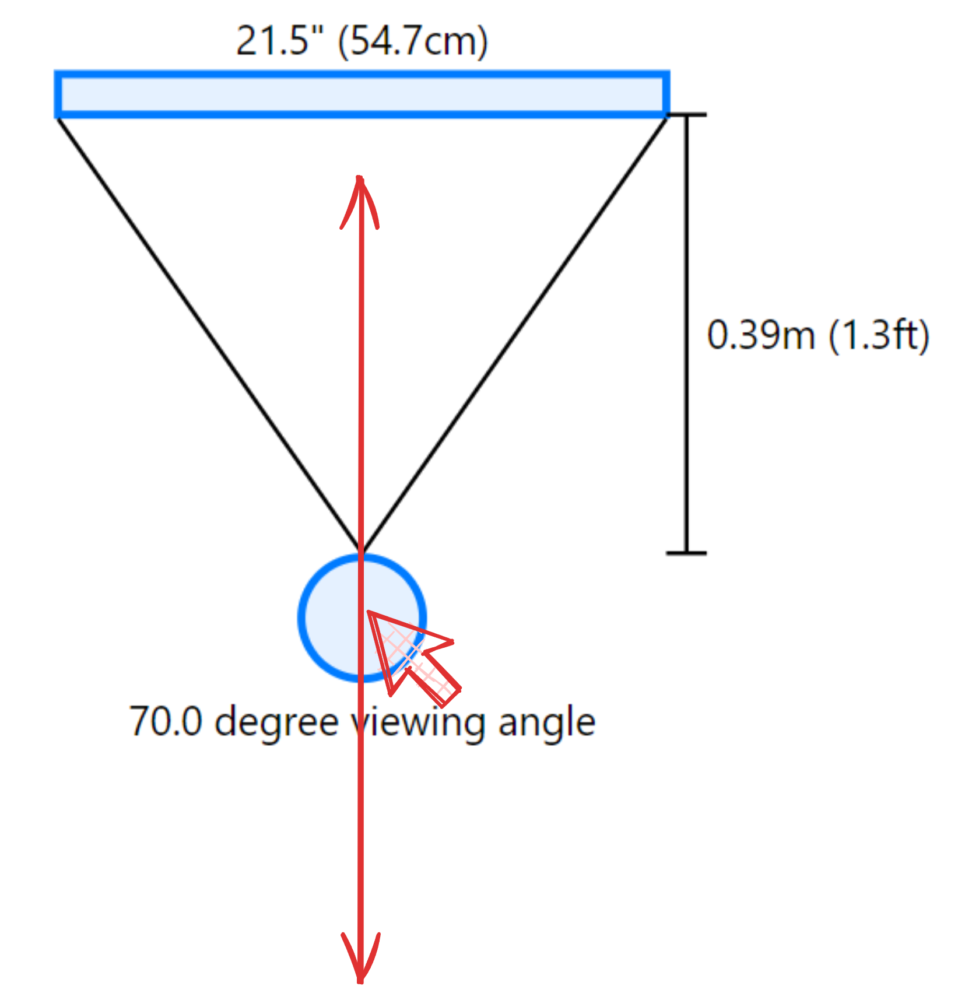
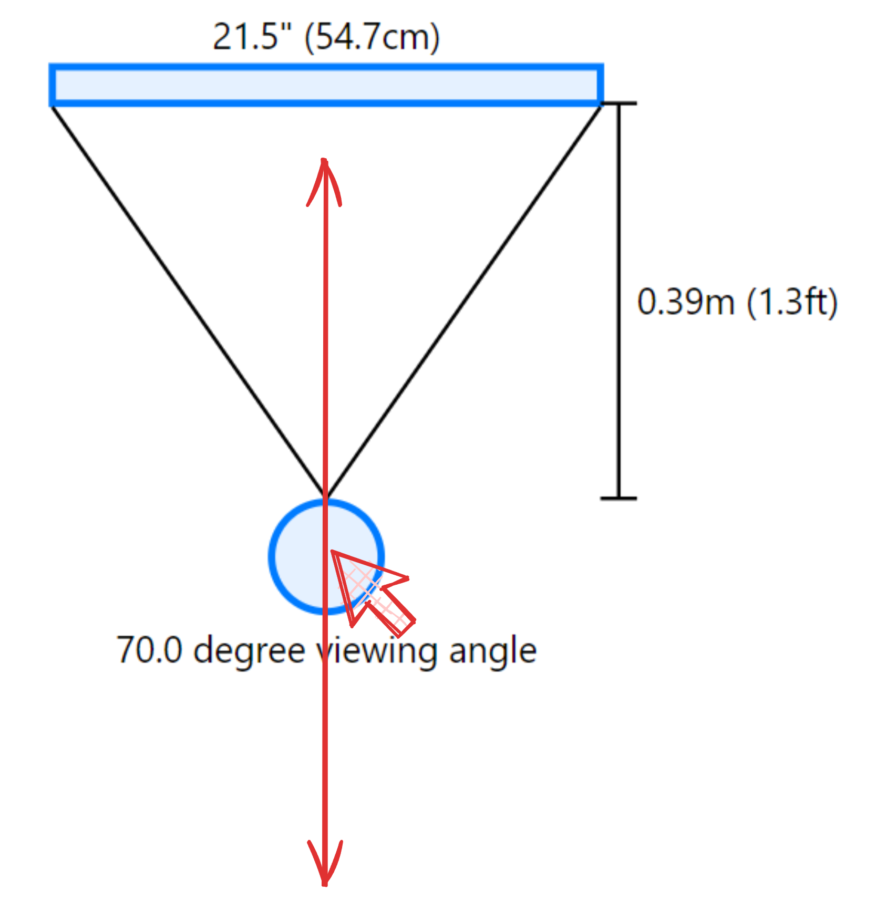

Guide
Drag the person circle within the graph to change the distance:
If you want to reset the graph to its default view, simply click the refresh button:

Drag the person circle within the graph to change the distance:
If you want to reset the graph to its default view, simply click the refresh button: